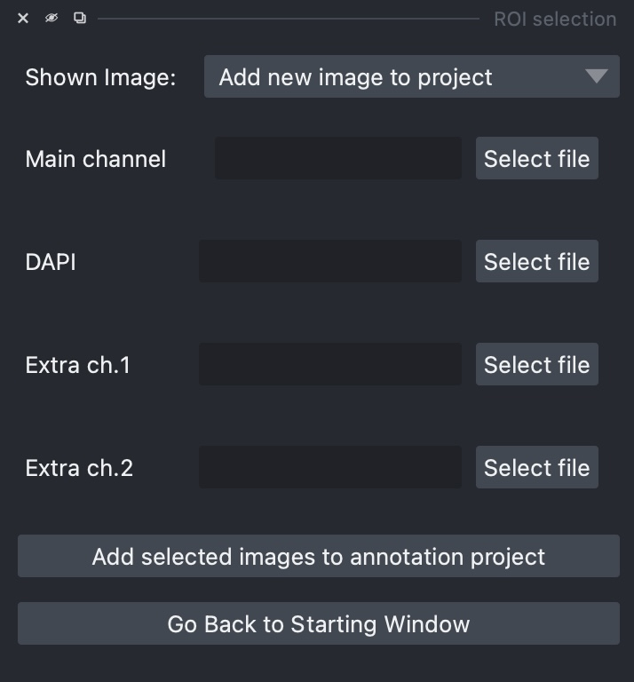

Select Regions of Interest¶
After clinking on Select Regions of Interest in the starting window of the annotation tool, a napari viewer will open and let you add images to the project and select regions of interest.
{kind=link}
What are regions of interest?¶
After adding an image to the project, you will need to select one or more region of interests (rectangular boxes) that will indicate the parts of the image that you want to manually annotate and that will be used in the following to train the segmentation algorithm.
How to select good regions of interest¶
When you select a region of interest, keep in mind that you will need to manually annotate all cells inside that region of interest. Each region of interest should contain at least several dozens of cells, ideally ~100.
These region of interests will be used to train the segmentation algorithm, so you should select the most representative parts of your data. If there are some particularly challenging parts of your data the you would like the segmentation algorithm to properly segment, then you should also select some regions of interest from these difficult parts.
Some example cases¶
Here there are some possible scenarios describing how you should proceed while choosing the regions of interest:
Scenario 1: Your images/datasets present several artifacts close to the borders, but you only care to have an accurate segmentation in the central part of the image, where image quality is higher and there are no artifacts. In this case, you can select regions of interest only from the central area of your image.
Scenario 2: Your images/datasets present several artifacts in all parts of the image, and you would like cells to be properly segmented even in parts of the image where these artifacts are present. Then, you should also include regions of interest where artifacts are present (but you should also include regions that are easier to segment)
Scenario 3: You acquired several images that look somehow different (different acquisition method, brightness, etc). Then, you should select regions of interest across all your images/datasets.
Adding images to the annotation project¶
Adding the first image¶
{kind=link}
On the right side of the napari viewer, select the paths of an image you want to add to the project (either insert the path manually or click on the Select file buttons).
For each image, you can add up to four channels:
Main channel: This is the main channel that will be used for segmentation (usually it is the bright-field channel)
DAPI channel: If available, add a DAPI channel because it often improves segmentation results
Extra channels: If you have additional channels that may be helpful for the manual annotation process, you can load them. They won’t be used by the segmentation algorithm though.
After you select the files with the image channels, click on Update Displayed Image Channels. This will add the image to the project and the image channels will be loaded in napari in different colors.
Browsing images in the project and adding new ones¶
After adding the first image, you can add another image by selecting the “Add new image” option from the dropdown menu “Shown image” in the top-right corner. Alternatively, using the same menu, you can switch between the images in the project.
{kind=link}
Updating image channels¶
At any moment, you can update the channel paths of an image added to the project. Simply update the path and then click again on the Update Displayed Image Channels button.
Selecting regions of interest in Napari¶
Once you selected an image in your project, you will see that a new shapes layer named “Regions of interest” has been loaded in Napari.
After selecting the shape layer, you can perform the following three actions:
{kind=link}
Move around and zoom: To move the image or zoom in/out, make sure that you select the “Lens” tool in the top-left corner toolbar in Napari. You can zoom by scrolling with your mouse/trackpad.
Create ROIs: To create a new region of interest, select the Napari “Rectangle” tool (see button 2 in the image on the right) and then draw one or more boxes. Then you can click on the
Save Regions of Interestbutton on the right to immediately save the selected ROIs.Delete or modify ROIs: In this case, select the “Select” tool in Napari (see button 3 in the image on the right). Then you can click on a box and press <backspace> to delete the rectangle. Otherwise, you can drag the rectangle around or adjust the corners.
Tip
While you have the “rectangle” or “select” tools selected, if you want to zoom or move around in the image, you can do that by keeping the <space-bar> key pressed.
Note
ROIs are automatically updated and saved when you switch to another image or go back to the starting window. Due to the current implementation, updating ROIs may take some time (depending on the size of the ROI) and the Napari interface may freeze for few seconds.